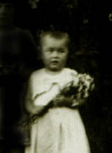
Mała Ania.
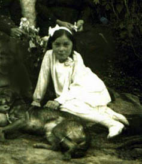
Ania, 1942 rok.
Ania, 1942 rok.
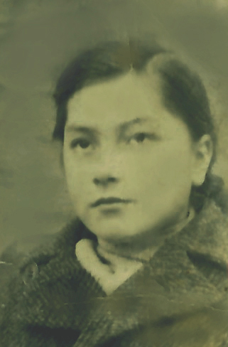
Ania w szkole. Bejsce.
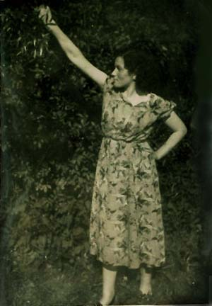
Anna- młoda mężatka.
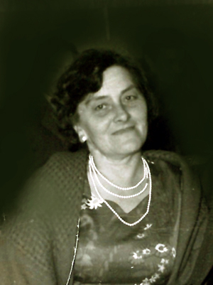
Anna w latach 70.
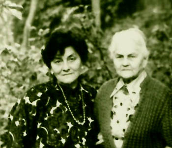
Anna z mamą, Hanną Niziołek. Czaplinek.
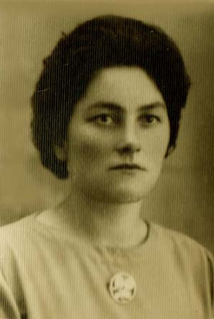
Anna Sawicka urodziła się 18.08.1931 roku w Bejscach. Miała dwa lata, kiedy zmarł jej ojciec Stanisław. Wychowywała się z rodzeństwem: Adamam i Kamilą. Wkrótce jej mama, Hanna Sawicka, wyszła za mąż za Stanisława Niziołka. Po wojnie wyjechała wraz z matką, ojczymem i przyrodnim bratem Stanisławem na Ziemie Odzyskane. Początkowo mieszkali wszyscy we wsi Kopań. 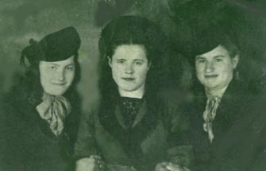
Hanna (pierwsza z lewej) z koleżankami. Kopań 1949 rok.
W 1949 roku Anna poznała Pawła Skrzypczyka.
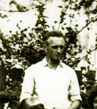
Paweł Skrzypczyk.
Miała 20 lat, kiedy po raz pierwszy została matką. Opowiadała, że bóle porodowe poczuła podczas seansu w kinie. Nie martwiła się, bo była przekonana, że dziecko wyjmą jej przez pępek.
26 sierpnia 1951 urodziła córeczkę Ewę.
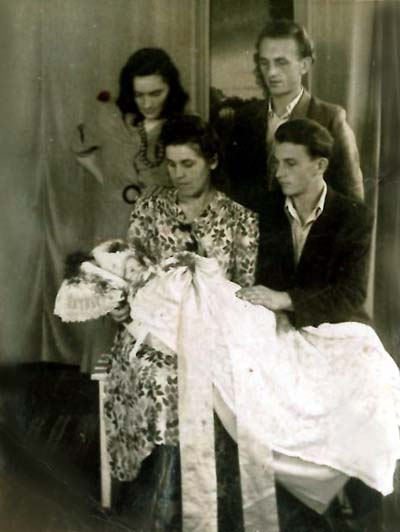
Chrzciny Ewuni. Darłowo.
Anna mieszkała już wówczas ze swoją rodziną w Darłowie, w poniemieckim domu z zapleczem gospodarskim i ogródkiem. Prowadziła dom, a mąż pracował na państwowej posadzie - był milicjantem. Wkrótce urodził się syn Marek (22 grudnia 1952 roku), a 4 sierpnia 1954 roku przyszła na świat Urszula.
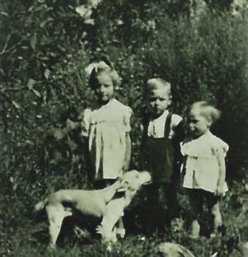
Od lewej: Ewa, Marek, Urszula.
Na następne dzieci trzeba było zaczekać parę lat, ale opłaciło się, bo od razu urodziły się bliźniaki: Jan i Małgorzata, czyli Jaś i Małgosia. Był 2 czerwca 1959 roku.
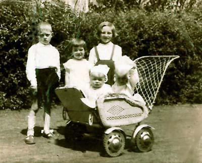
Od lewej: Marek, Urszula, Ewa. W wózku Jan i Małgorzata.
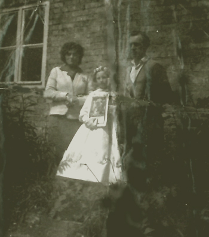
15 sierpnia 1961 roku w życiu licznej rodziny Skrzypczyków nastąpiła rewolucyjna zmiana. Zdołali już przywyknąć do wygodnego miejskiego życia, do morza w pobliżu, pieknej plaży, bliskości licznej rodziny, kiedy okazało się, że zmuszeni są przeprowadzić się na drugi koniec Polski.
To odmieniło całe ich życie.
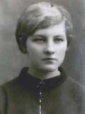
Ewa
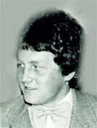
Marek
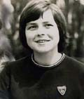
Urszula
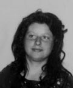
Małgorzata
Jan